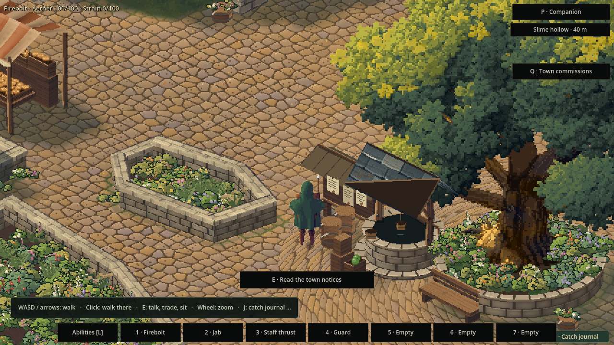
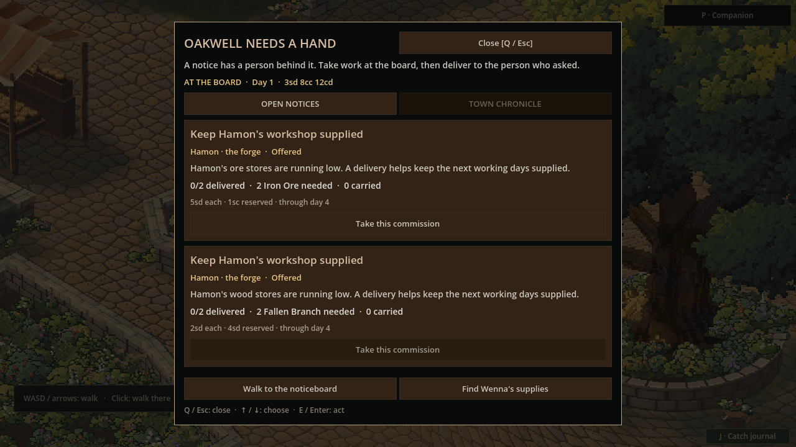
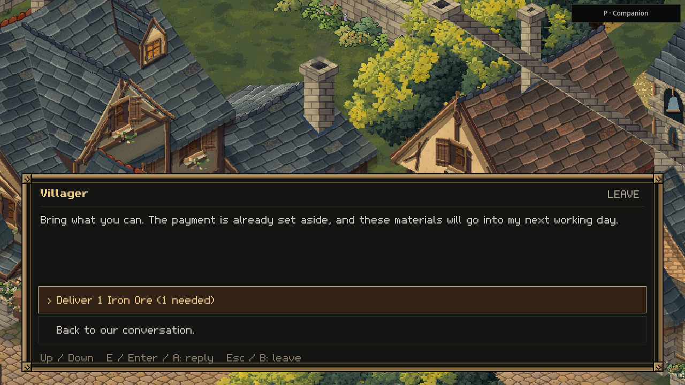
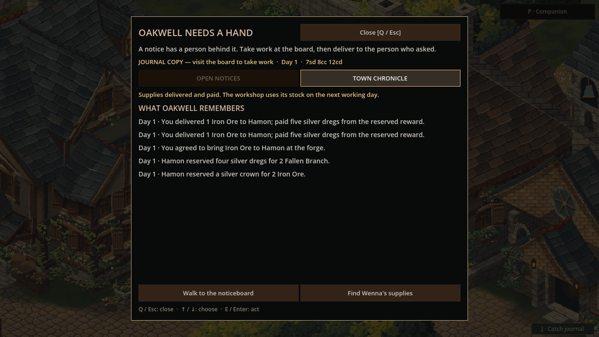

A town that needs you
24 October 2026 · Day 33
Oakwell can now ask for help. Take a real supply commission, buy what you can carry, and deliver it to the person who needs it. The payment comes from their till, and the town remembers who helped.

The missing reason to stop
Hamon already has a home, a forge and a working day. He needs ore and fuel to make tools. Wenna already brings goods through the gate, sells from her cart and takes her remaining stock away again. The traveller can meet them both. What was missing was a reason for those lives to meet.
This feature connects them through a simple promise: bring what the workshop needs, and its owner will pay you. The notice grows out of the supplies on its shelves. A low store can ask for replenishment before work stops; a real shortage can explain why the forge is waiting. The first offers can be ordinary replenishment, with time to help before a shortage becomes urgent.
A notice with something behind it
The square gets a roofed timber noticeboard. Its notices explain who needs help, what is required, how much is still wanted and what the delivery will pay. Taking a commission gives the journey a destination: supplies to find and a named owner to return to.
The reward belongs to the person posting it. Money is set aside from the workshop's own till when the request is made. Deliver a smaller amount and receive the matching part of that payment. Cancel the remaining work or let the request lapse, and the unspent money goes back to its owner.
That matters to the sort of world Sprawl is becoming. The board tells you what a place can afford to ask, tying its promises to the same money that keeps the business running.

Across the square, through the market
Wenna carries a finite supply of iron ore and fallen branches. Buying them uses the ordinary counter, the ordinary satchel and the coins already in your purse. A commission is a reason to watch for her cart and make a choice about what to buy.
You can fill the order a little at a time. Buy one parcel, take it to Hamon, and use that delivery's payment to fund the next. Helping does not require the money for the whole order before you can begin.
The delivery belongs to Hamon. You must reach him and speak to him; reading the board from the square cannot send goods into a distant workshop. Accepted items leave your satchel and enter his actual supply stores. The payment reaches the same purse you used at the market.
Production follows the town's working day. When the normal economy next runs, the forge has those supplies available. If a lack of inputs had stopped it, the usual work rules decide when it can start again.

The place remembers
The board's chronicle keeps the help that has been given, and Hamon's conversation can acknowledge it. The result is a small shared history: the traveller who brought the iron, the commission partly filled, the work still waiting for fuel.

Keeping that history means saving the whole exchange together. The town's stores and till, the outstanding promise, the goods bought from Wenna and the player's payment must agree when the game opens again. Returning tomorrow should continue the same transaction, with the same goods still delivered and the same payment already made.
This first connection belongs to Oakwell's working smith and its existing market. It gives the town a reason to need the traveller, and the traveller a reason to care about a person beyond the next purchase. More places can grow from that relationship as their workers and businesses become part of the same living world.